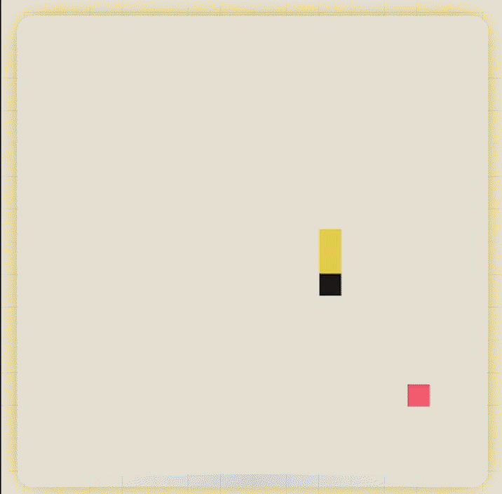

Комфортные сессии
Запускай игру за пару секунд — идеальный формат, чтобы отвлечься на перемене, в метро или между задачами.
Быстрые катки в Змейку, Тетрис, и остальные игры. Открыл сайт — сразу в игре: без регистрации, без лишних кнопок, с удобным управлением на телефоне и компьютере.

Нажми на игру, чтобы открыть её в полноэкранном режиме. Счёт и личный рекорд сохраняются на твоём устройстве — возвращайся, чтобы побить самого себя.
Запускай игру за пару секунд — идеальный формат, чтобы отвлечься на перемене, в метро или между задачами.
В твоём распоряжении есть игры разного формата. От аркад, до головоломок и даже хоррор игр.
Играй так, как тебе удобнее: днём — в светлой теме, ночью — в тёмной, одним нажатием.
SyharikPlay задуман как уютное место с простыми и понятными мини‑играми, куда можно зайти в любой момент: на ноутбуке или телефоне, в тёмной или светлой теме, в одиночку или с друзьями за одним экраном — чтобы просто получить удовольствие от игры.